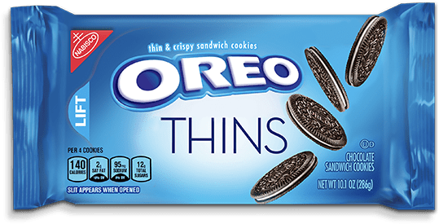

Making a Convincing Argument

A misconception people commonly have about Oreo Thins is that they are healthier than the original. In my journey to free the world of this minsconception, I would want to keep a few things in mind.
The clip from Adam Ruins Everything points out how people will actually experience physical pain when they are proven wrong. The video also explains the "backfire effect", in which people actually stick to their beliefs more after being proven wrong. This could mean that if I am seeking to change someone's mind I should probably do it without them knowing.
In chapter 3 of The Truthful Art, Cairo talks about three "mind bugs": patternicity, storytelling, and confirmation.
Patternicity is our habit of finding patterns where they don't always exist.
Storytelling is our tendency to invent cause-effect relationships to explain patterns. Confirmation is our bias to find information that confirms our existing beliefs while simultaneously ignoring information that contradict our beliefs.
Cairo's advice for making visualization more truthful is to focus on increasing depth and breadth. In terms of how healthy Oreo Thins are, I could compare them to other types of oreos, or other brands of cookies.
One thing that The Debunking Handbook talks about is something called the Familliarity Backfire Effect. The effect basically states that the more familiar people are with a myth, the more they believe it to be true. So this means that when trying to disprove a delusion, we should avoid even mentioning the myth as much as possible.
Pertinent question: if people have so many cognitive biases that cause them to stick to their beliefs with such conviction, then how much value is there really in being around people who think differently then you? Are we more willing to have our minds changed by certain people or people who have certain qualities?